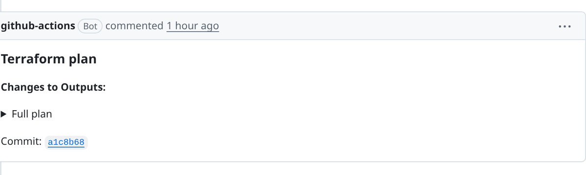
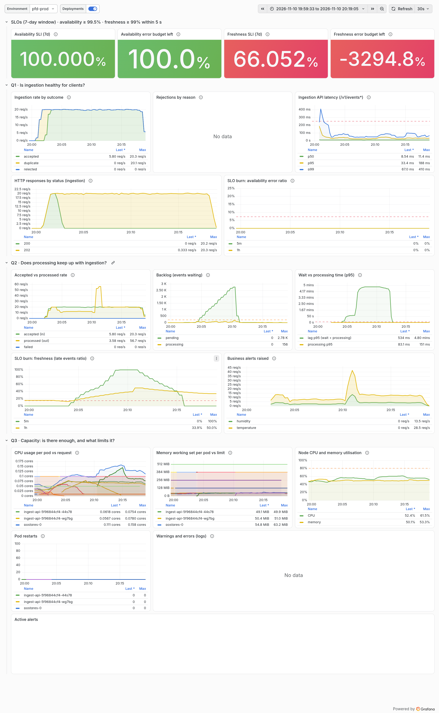
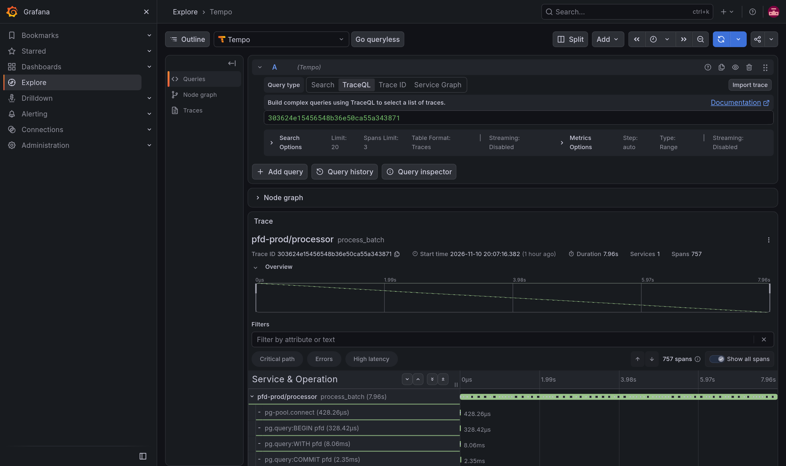
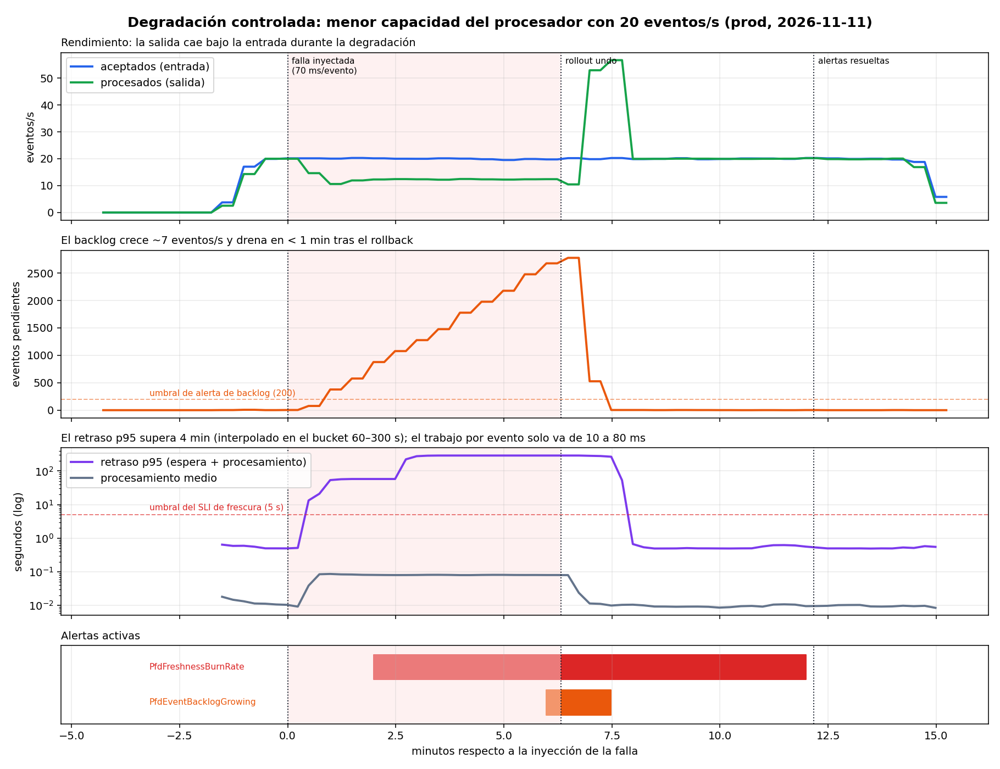

Proyecto de cátedra integrador · DevOps / Métricas de Software · ESEN
Ingesta y análisis de eventos de dispositivos IoT
Escenario 3: plataforma que recibe lecturas de temperatura, humedad y estado; tolera duplicados,
desorden y ráfagas; calcula agregados y alertas. Corre en K3s sobre una VM de Google Cloud, construida con Terraform,
entregada con GitHub Actions y observada con Prometheus, Loki, Tempo y OpenTelemetry.
Equipo: [nombres del equipo] · Nube: GCP (cambio desde Azure aprobado por el docente)
Eventos que se duplican, llegan tarde y en ráfagas
Una organización de mantenimiento necesita el estado de sus instalaciones, históricos y alertas cuando una lectura sale de límites.
La red de dispositivos no es confiable, y el sistema tiene que ser correcto de todas formas.
Duplicados
Un dispositivo reintenta y el mismo eventId llega dos veces. No debe distorsionar conteos ni agregados (ESC3-05).
Fuera de orden
Llegan eventos generados antes que otros ya recibidos. Las consultas usan la marca de generación, no el orden de llegada (ESC3-08).
Ráfagas e interrupciones
Picos de carga y procesadores que se detienen. Nada confirmado se pierde, y el backlog debe drenar a cero al recuperar (P3-4).
Pruebas obligatorias del escenario
P3-1 · ráfaga de 1,000 eventosP3-2 · 20 ev/s durante 120 sP3-3 · 50 duplicados + 50 fuera de ordenP3-4 · detener el procesador con pendientesP3-5 · tasas, retraso y una degradación por menor capacidad
COM-02 · Arquitectura implementada
Aceptar rápido y de forma durable, procesar después
Aceptación síncrona: 202 solo después de que el INSERT hace commit.
Sin broker extra: la tabla es la cola; el backlog es una consulta.
Desacople: si el procesador falla, la API sigue aceptando.
5.1 · 5.2 · Semántica y consistencia
Qué garantiza el sistema y qué no
Aceptada vs. confirmada
Estado
Significa
accepted (202)
Persistido de forma durable. Sobrevive a reinicios.
processed
Alertas evaluadas y guardadas; efecto aplicado.
duplicate (200)
Ya existía: devuelve la referencia original y no crea trabajo.
rejected (422)
No cuenta como aceptada; queda registrada con su motivo.
Procesamiento: al menos una vez, con efectos idempotentes
(ON CONFLICT DO NOTHING en alertas). No prometemos "exactamente una vez".
Agregados: por generatedAt en [inicio, fin), así que el orden de llegada no importa.
Resultado desconocido: el cliente reintenta con el mismo eventId, y la restricción única lo vuelve inocuo.
COM-06 · Compromisos y alternativas descartadas
Decisiones técnicas
Tema
Elegimos
Descartamos
Por qué
Cola
Tabla PostgreSQL + SKIP LOCKED
Kafka, Redis Streams
Una sola fuente de verdad; aceptar y encolar es una transacción. Menos RAM y menos piezas que operar.
Plataforma
K3s en 1 VM
GKE, varios nodos
Lo exige el enunciado. Cabe en US$100; sin HA entre zonas (permitido).
Ingress
F5 NGINX Ingress Controller
ingress-nginx comunitario
El comunitario se retiró en marzo de 2026 y ya no recibe parches de seguridad.
TLS / DNS
Let's Encrypt + sslip.io
Dominio propio, certificado manual
Gratis y automático (cert-manager). El nombre resuelve a la IP estática.
Secretos
Secretos de entorno de GitHub → Secret de K8s (cifrado en reposo)
Secret Manager + External Secrets
Menos componentes. Limitación: el Secret se puede leer con permisos RBAC del namespace.
Identidad CI
OIDC + Workload Identity Federation
Llaves JSON de cuentas de servicio
Sin credenciales de larga vida que filtrar o rotar.
Base de datos
Postgres en el clúster
Cloud SQL
~US$10–25/mes extra. Riesgo aceptado: los datos viven en el disco de la VM.
Parte 1
DevOps
Infraestructura como código, Kubernetes, entrega continua, seguridad y costos.
DEV-06 · DEV-07 · DEV-08 · DEV-09
Infraestructura como código en dos capas
1 vez infra/bootstrap
Bucket GCS para el estado: versionado, privado, con bloqueo
Federación OIDC GitHub → GCP (solo este repo)
3 cuentas de servicio de CI con mínimo privilegio
Presupuesto US$100 con alertas
continuo infra/terraform
VPC, firewall, IP estática
Artifact Registry (tags inmutables)
VM Shielded + script de arranque que instala K3s
cert-manager, NGINX y el emisor TLS como manifiestos de K3s
PRfmt · validate · plan con SA de solo lectura
Comentarioel plan queda en el PR para revisión
Merge + aprobaciónentorno infra-prod
Applyre-plan y apply con gha-tf-apply
Un PR nunca aplica: la SA de plan solo puede leer, y la de apply solo se puede asumir desde el entorno infra-prod.

El workflow comenta el plan en cada PR (aquí: solo cambian outputs).
# reconstrucción completa (docs/runbooks/rebuild.md)
cd infra/bootstrap && terraform apply # 1 vez
cd infra/terraform && terraform apply
# la VM arranca e instala K3s sola
kubectl get nodes Ready
Commit ↔ run del workflow ↔ imagen ↔ pod: todos llevan el mismo SHA.
Prevención de promociones accidentales: los entornos solo aceptan main, y el token de dev no tiene permisos en prod.
DEV-12 · Recuperación
Un despliegue defectuoso se revierte solo
Caso real: el primer release
Un error de Kustomize hizo que los pods pidieran la imagen :latest, que no existía.
Failed to pull image ".../ingest-api:latest": NotFound
::error::Rollout failed; reverting to previous ReplicaSet
deployment.apps/ingest-api rolled back
Como maxUnavailable: 0, la versión anterior nunca dejó de atender. El workflow falló en rojo, y el arreglo llegó por PR #2.
Tres formas de revertir
Automática: si los pods nuevos no quedan Ready en 180 s, el workflow ejecuta rollout undo.
Manual:kubectl rollout undo deployment/processor (usada en el experimento).
Por versión: workflow deploy con el SHA anterior, reproducible y auditable.
El rollback no restaura datos. Por eso las migraciones son aditivas: la versión anterior sigue funcionando con el esquema nuevo.
DEV-10 · 5.3 · Mínimo privilegio
Cada identidad puede lo justo
Identidad
Puede
Desde dónde
gha-tf-plan
Leer el proyecto y el estado
cualquier PR del repo
gha-tf-apply
Cambiar la infraestructura
solo el entorno infra-prod (aprobado)
gha-deployer
Subir imágenes, abrir el túnel IAP
entornos dev/prod, rama main
deployer-dev / -prod (K8s)
Gestionar workloads de su namespace
token en el secreto del entorno de GitHub
k3s-node (VM)
Leer imágenes, escribir logs
la VM
ar-pull-refresher
Actualizar un Secret (ar-pull)
CronJob
Red
Públicos: 80 y 443. SSH (22) y API de K8s (6443) solo por IAP, con IAM. Nunca expuestos a internet.
Secretos
Ninguno en git, imágenes ni estado. CI lo verifica. Antes de hacer público el repo se revisó todo el historial.
Lo que un Secret de K8s no protege: está cifrado en reposo (K3s secrets-encryption), pero quien tenga get secrets en el namespace o sea admin del nodo puede leerlo.
DEV-14 · 5.9
Dentro de los US$100
Recurso
Precio
24/7 · mes
Uso planificado
VM e2-standard-2
~US$0.067/h
$49
~$16
Disco pd-balanced 40 GB
US$0.10/GB-mes
$4
$5
IP estática
~US$0.005/h, también con la VM detenida
$3.6
$4.5
Artifact Registry, GCS, egreso
centavos
< $2
< $2
Total
~$58
~$27
Sin balanceador de GCP (~US$18/mes): K3s ServiceLB usa la IP de la VM.
Controles
Presupuesto con alertas al 25/50/75/90/100% y al 100% pronosticado
scripts/vm.sh stop cuando nadie trabaja
Limpieza automática de imágenes viejas
terraform destroy documentado
Las alertas de presupuesto avisan, no detienen. Una VM detenida deja de cobrar cómputo, pero el disco y la IP siguen cobrando.
Parte 2
Métricas y observabilidad
Preguntas operativas, SLIs y SLOs, alertas, dashboards, pruebas y un incidente controlado.
MET-02 · MET-03 · MET-04 · Anexo II 9
Tres señales, una correlación
Métricas
prom-client → /metrics → Prometheus cada 15 s (ServiceMonitor). Reglas de SLI cada 30 s. Retención 7 días.
A 20 req/s: ≈ 60,480 fallas por semana. Un reinicio planificado de ~2 min consume ~2% del presupuesto.
Población
Eventos que terminaron de procesarse
Evento bueno
processed_at − received_at ≤ 5 s
Fórmula
lag_bucket{le="5.0"} / lag_count (límite exacto de bucket, sin interpolar)
Exclusiones
Pendientes aún no cuentan; un procesador detenido lo cubre la alerta PfdProcessorStalled
Por qué 5 s
En estado estable el retraso p95 es ~0.5 s; 5 s da margen para ráfagas y detecta una caída en minutos
SLO 2 · ventana 7 días
99%
Presupuesto: 1% de los eventos
A 20 ev/s: ≈ 1 h 40 min de caída total del procesamiento por semana.
Población
Solicitudes a /v1/events*
Evento bueno
Duración en el servidor ≤ 250 ms
Fórmula
duration_bucket{le="0.25"} / duration_count
Sin SLO
Se sigue en el dashboard; la latencia percibida depende de la red del cliente, que no controlamos
Observado (dev, 20 ev/s)
99.46%
de las solicitudes en menos de 250 ms
Presupuesto restante = 1 − (razón de error en 7 d / razón permitida). 1 = intacto, 0 = agotado, < 0 = SLO incumplido.
MET-06 · Anexo II · 7
Cuatro alertas con criterio
SLO PfdIngestAvailabilityBurnRate
5xx > 7.2% (14.4 × 0.5%) en 1 h y en 5 min, durante 1 min.
Falso positivo: tráfico muy bajo, donde 1 error de 10 ya es 10% (en dev es informativa).
SLO PfdFreshnessBurnRate
Eventos tardíos > 14.4% en 1 h y en 5 min, durante 1 min.
Falso positivo: una prueba de carga muy por encima de la capacidad (pero es consumo real del presupuesto).
Síntoma PfdEventBacklogGrowing
Pendientes > 200 y en aumento durante 5 min.
200 ≈ 10 s de entrada a 20 ev/s. Falso positivo: una ráfaga larga con capacidad suficiente.
Síntoma PfdProcessorStalled
Hay pendientes y la tasa de procesamiento es 0 durante 5 min.
Detecta un procesador caído aunque haya poco tráfico, donde la frescura no tiene qué medir.
¿Por qué 14.4× en dos ventanas? A ese ritmo, 1 hora consume ~8.6% del presupuesto semanal. La ventana larga evita alertar por picos;
la corta hace que la alerta se apague rápido al mitigar (patrón del SRE Workbook de Google).
MET-05 · 20 paneles orientados a preguntas
Dashboard durante el experimento
Fila SLOs
SLI de 7 días y presupuesto restante, con colores por umbral.
Q1 · Ingesta
Tasa por resultado, rechazos por motivo, latencia p50/p95/p99 (línea de 250 ms), códigos HTTP, quema del SLO.
Q2 · Procesamiento
Aceptados vs. procesados, backlog, espera vs. procesamiento, quema de frescura, alertas de negocio.
Q3 · Capacidad
CPU y memoria por pod vs. requests y límites, nodo, reinicios. Abajo: logs de errores y alertas activas.
Selector de ambiente (prod/dev) y anotaciones de despliegue. Generado por scripts/gen-dashboard.py.

MET-02 · MET-04 · Anexo II · 3 y 5
Seguir un evento de punta a punta

Traza de un process_batch de 7.96 s durante la degradación: 757 spans; cada process_event tarda ~80 ms.
Propagación asíncrona
La API guarda el traceparent W3C junto al evento. El procesador crea process_event con un span link a esa traza, aunque corra minutos después en otro proceso.
Un primer intento se abortó antes de inyectar nada: la alerta de frescura seguía activa por las pruebas P3. Sin una línea base limpia no se puede atribuir la causa.
Evidencia · series.csv a 15 s de resolución
Detección en 2 min, recuperación en 51 s

t
Evento
0
Falla inyectada (02:03:49 UTC)
+29 s
Salida cae a ~12 ev/s; retraso p95 = 13 s
+1m59s
firing PfdFreshnessBurnRate
+5m59s
firing PfdEventBacklogGrowing
+6m19s
Mitigación:rollout undo · pico ≈ 2,780 pendientes
+7m10s
Backlog < 50 (≈ 55 ev/s al ponerse al día)
+7m14s
resolved backlog
+11m44s
resolved frescura (ventana de 5 min limpia)
La alerta de frescura tarda ~5 min más en apagarse, a propósito: espera a que su ventana corta ya no tenga eventos tardíos.
Antes / durante / después · mecanismo causal
El problema no fue la latencia por evento: fue la espera
Señal
Antes
Degradado
Después
Aceptados (ev/s)
19.9
19.8
19.7
Procesados (ev/s)
20.0
12.4
20.1
Backlog (eventos)
1
2,677
2
Retraso p95
0.50 s
288 s
0.50 s
Procesamiento medio
10 ms
80 ms
9 ms
Tardíos > 5 s (5 min)
0%
100%
0%
API p95
41 ms
24 ms
28 ms
CPU del procesador
0.076
0.060
0.086
1 · Capacidad < entrada
1 / (70 + 10 ms) ≈ 12.4 ev/s < 20 ev/s. La hipótesis decía ~14 porque ignoraba los ~10 ms normales.
2 · La cola crece sin límite
Utilización > 1: el excedente de ~7.4 ev/s se acumula. 7.4 × 365 s ≈ 2,700 pendientes, como se observó.
3 · La espera domina
El procesamiento pasó de 10 a 80 ms, pero el retraso de 0.5 s a minutos. Mientras, la API siguió en 24–41 ms, sin errores ni pérdidas.
Lección: la CPU bajó durante el incidente (el procesador dormía). Escalar por CPU no habría ayudado; hay que escalar por backlog o retraso.
Honestidad sobre la evidencia
Limitaciones y lo que haríamos después
Limitaciones
Ventana de 1 h "cebada": las pruebas P3 la dejaron en 15.5%, así que la alerta disparó en cuanto cruzó la de 5 min. En una hora limpia tardaría ~3–4 min.
Duplicados en la línea base: el intento abortado usó la misma semilla, y ~1,720 eventos llegaron como duplicados. Bonus: prueba la deduplicación entre corridas.
Buckets gruesos en la duración de procesamiento: el p95 no distingue 10 de 80 ms.
p95 interpolado: 288 s es una estimación dentro del bucket (60, 300] s.
Un nodo, una corrida, carga sintética: muestra el mecanismo, no números de capacidad productivos.